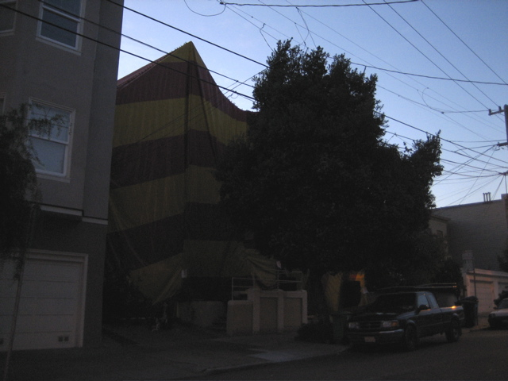

<--Previous Up Next-->

Where's my house?
Returning from a walk in the nearby park, Huxley was dismayed to find that we weren't going home for the evening.
Along the roof line you can see the hundreds of clamps holding together sections of the tent.